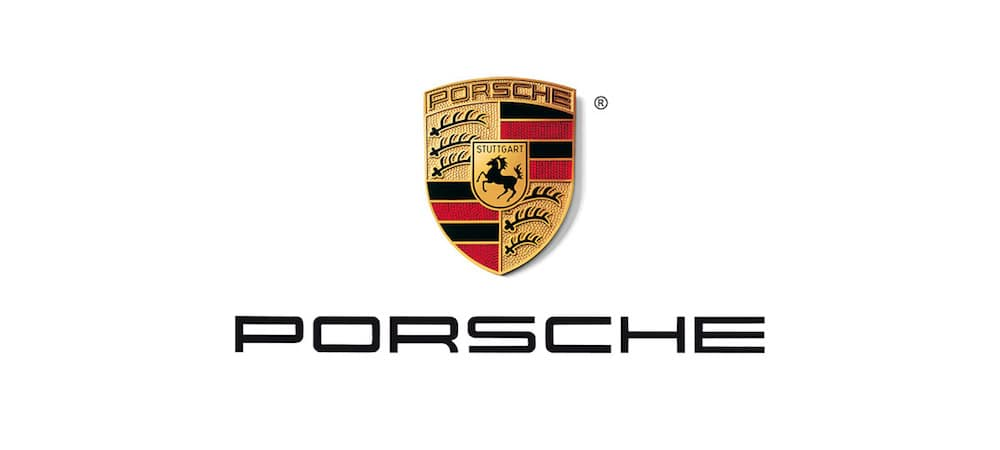

Porsche Company.
a German automobile manufacturer specializing in luxury, high-performance sports cars, SUVs and sedans, headquartered in Stuttgart, Baden-Württemberg, Germany. The company is owned by Volkswagen AG, a controlling stake of which is owned by Porsche Automobil Holding SE. Porsche's current lineup includes the 718, 911, Panamera, Macan, Cayenne and Taycan.
The origins of the company date to the 1930s when Czech-German automotive engineer Ferdinand Porsche founded Porsche with Adolf Rosenberger, a keystone figure in the creation of German automotive manufacturer and Audi precursor Auto Union, and Austrian businessman Anton Piëch, who was, at the time, also Ferdinand Porsche's son-in-law. In its early days, it was contracted by the German government to create a vehicle for the masses, which later became the Volkswagen Beetle. After World War II, when Ferdinand, a member of both the Nazi Party and the SS, was arrested for war crimes, his son Ferry Porsche, an SS volunteer, began building his own car, which would result in the Porsche 356.

The origins of the company date to the 1930s when Czech-German automotive engineer Ferdinand Porsche founded Porsche with Adolf Rosenberger, a keystone figure in the creation of German automotive manufacturer and Audi precursor Auto Union, and Austrian businessman Anton Piëch, who was, at the time, also Ferdinand Porsche's son-in-law. In its early days, it was contracted by the German government to create a vehicle for the masses, which later became the Volkswagen Beetle. After World War II, when Ferdinand, a member of both the Nazi Party and the SS, was arrested for war crimes, his son Ferry Porsche, an SS volunteer, began building his own car, which would result in the Porsche 356.